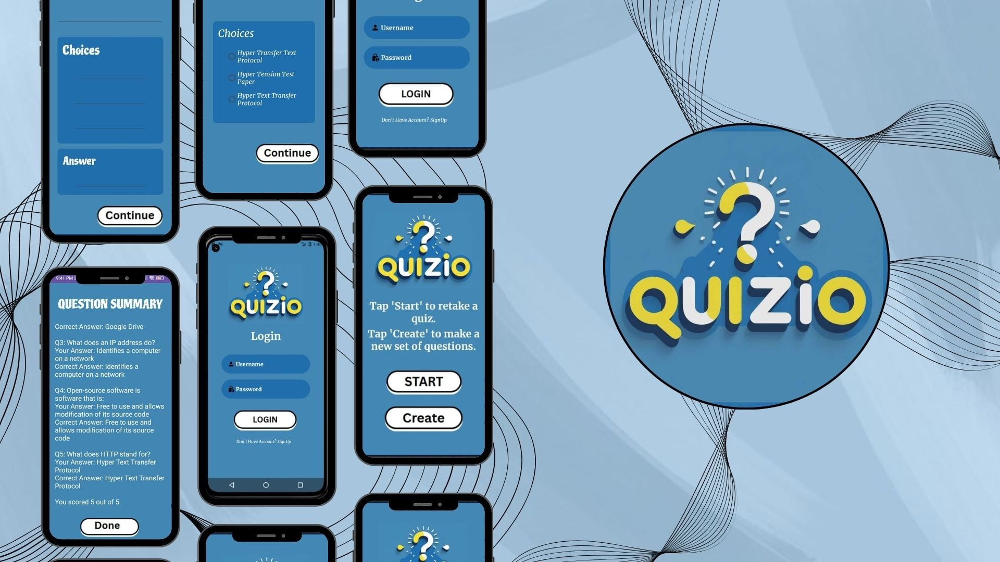
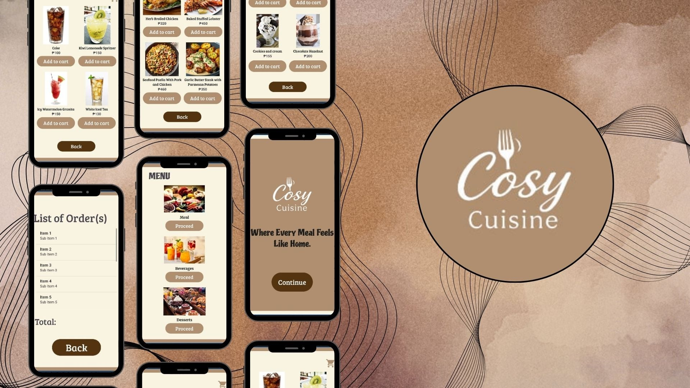

My Projects

Quizio
Quizio is a mobile quiz application that allows users to create custom questions and multiple-choice answers. After creating a set of questions, users can take the quiz, see their scores, and review the correct answers. The app also provides options to retake the same quiz or create a new set of questions, making learning more interactive and fun.

Cosy Cuisine
Cosy Cuisine is a mobile application that allows users to browse meals, beverages, and desserts with images and prices. Users can easily add items to their cart, and the app will automatically display a summary of their order along with the total price. With its warm design and tagline “Where Every Meal Feels Like Home,” the app makes ordering more convenient, organized, and enjoyable.